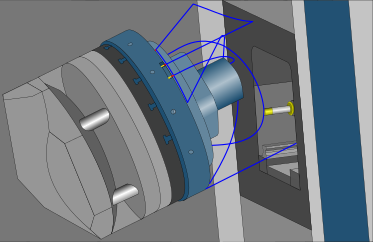
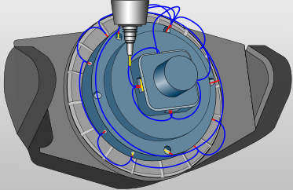
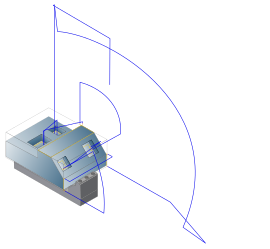
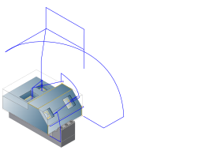

NC
Note
The functions Origin ID (NCS) and NC safety are available with a license for the VIRTUAL Machining Center or the VIRTUAL Machining Optimizer. Please contact your OPEN MIND partner.
Origin ID (NCS)
Use global definition: Enable to use the default settings of the VIRTUAL Machining postprocessor for creating the NC file. The origin used is displayed, an adjustment is not possible.
Use manual definition: Activate to define a job list-specific origin. Select or enter the origin directly from the list.
No origin output: No origin is output in the NC program.
NC safety / Postprocessor safe positions
When the Postprocessor safe positions option is used, fixed positions in the machine coordinate system are used to ensure NC safety.
The positions are stored in the postprocessor configuration and are approached, in particular, for safe positioning (by moving linear and rotary axes). When approaching the positions, the NC file switches to machine coordinates (for example M91 for Heidenhain, SUPA
for Siemens).
NC safety / General safety
Use different safety functions (clearance distance/clearance plane) to enable collision-free machining on the machine.
-
(A): Machining with short tool. Linking movements take place at the level of the Security plane, see → .
-
(B): Machining with very long tool. The 2D Curve is used to guide the tool, see → . Linking movements take place at the Linking height, see → .
If the Prefer general safety function is activated, hyperMILL automatically decides between variants (A) and (B), whereby (A) is generally used so long as the tool length is sufficiently short and the Z axis limits are not violated. Otherwise, variant (B) is used.
|
Example |
BC kinematics, Contouring using 3D Free Path Milling, (1) Contours to be machined, (2) 2D Curve for guiding the tool, (3) Security plane, (4) Linking height. |
 |
|
Axial security distance: Distance to be maintained between the tool and part in the axial direction. The defined value is taken into account when the Optimize clearance plane option is enabled.
|
Example |
BC kinematics, (1) Height of the clearance plane. |
|
|
||
Security plane: The height of the security plane is calculated to the given clamping position. The value should be selected so that all rotary axes of the machine can be moved without a collision.
For table-head, head-head kinematics as well as for kinematics with more than 5 axes, the direction of the security plane can be defined.
|
Example |
BC kinematics, (1) Height of the security plane (2) Side view, (3) Top view, B axis rotated by 90 degrees. |
|
|
||

Optimize clearance plane: When generating the NC file, the NC Optimizer trims the rapids from and to the hyperMILL job clearance plane to the mandatory length. This avoids problems due to end position violations.
|
Example |
BC kinematics, (1) Clearance plane not optimized, X axis limit exceeded, (2) Clearance plane optimized, X axis limit maintained, (3) Linking movement. |
|
|
||

Smooth linking: Optionally, the link rapids, including connections with alternating inclination, are made using a natural movement that is adapted to the machine kinematics. The optimization of the hyperMILL job clearance planes is automatically activated during smooth linking.
Use dynamic stock: Only available if the Smooth linking function is activated. An updated stock is created for each job in the job list, which is considered for linking movements so that they are collision-free. The function is deactivated by default. Longer calculation times result when generating the NC file.
NC safety - interactive
Use manually generated 2D curves to enable collision-free machining on the machine.
Note
The functions for NC safety - interactive are available with an appropriate license for the VIRTUAL Machining Center or the VIRTUAL Machining Optimizer. Please contact your OPEN MIND partner.
Active: Activate the functions for interactive safety.
Prefer general safety: Activate for machining operations in which collision safety must be guaranteed regardless of the model geometry and the tools used. The function combines the following strategies:
2D Curve
|
Profiles: Select the 2D curves that can be used to create a collision-free linking movement between two part machining operations. |
Linking height: Define the height of the linking movement, starting from the clamping position.
|
Example |
BC kinematics: Machine with strongly limited Z axis (large component, long tool). |
NC safety / Optimized tunnel logic
Note
The Optimized tunnel logic function is specially developed for machines with two rotary axes in the table and the possibility of collision-safe positioning of the tool and spindle by retreating into a tunnel with the Z axis. When approaching and retracting for NC jobs, all axes except Z are positioned in a rapid traverse block, which significantly reduces non-productive times.
|  |
Axial security distance: Distance to be maintained for the tool in the axial direction
If the Optimize clearance plane and Smooth linking functions are not activated, the defined axial security distance is maintained to the highest point of the initial stock model of the job list, to the part and to the fixture during linking movements between the jobs without a change of inclination.
If the Smooth linking function is not activated, only the start stockmodel is considered during collision check.
When changing the inclination, a maximum retraction takes place in the direction of the tool axis up to the tunnel position.
Fast travel movements from and to the hyperMILL job clearance plane are automatically adjusted.
Optimize clearance plane: If the Optimize clearance plane function is activated, the defined axial security distance is maintained to the highest point of the initial stock model of the job list, to the part and to the fixture during linking movements between the jobs without a change of inclination.
When changing the inclination, the axial security distance to the initial stock model of the job list, to the part and to the fixture is maintained.
Fast travel movements from and to the hyperMILL job clearance plane are automatically adjusted.
Smooth linking: Optionally, the link rapids, including connections with alternating inclination, are made using a natural movement that is adapted to the machine kinematics. The optimization of the hyperMILL job clearance planes is automatically activated during smooth linking.
If the Smooth linking function is activated, the axial security distance is maintained to the component and to the fixture for all linking movements between the jobs.
Fast travel movements from and to the hyperMILL job clearance plane are automatically adjusted.
NC safety / optimized table table logic
Note
The Optimized table table logic function is available for all machines with two rotary axes in the table.
Example of use: Smooth linking and Optimize clearance plane are enabled.
|  |
Axial security distance: Distance to be maintained for the tool in the axial direction
If the Optimize clearance plane and Smooth linking functions are not activated, the defined axial security distance is maintained to the highest point of the initial stock model of the job list, to the part and to the fixture during linking movements between the jobs without a change of inclination.
If the Smooth linking function is not activated, only the start stockmodel is considered during collision check.
When changing the inclination, a maximum retraction (minus the → ) takes place in the direction of the tool axis.
Fast travel movements from and to the hyperMILL job clearance plane are automatically adjusted.
|  |
Optimize clearance plane: If the Optimize clearance plane function is activated, the defined axial security distance is maintained to the highest point of the initial stock model of the job list, to the component and to the fixture during linking movements between the jobs without a change of inclination.
When changing the inclination, the axial security distance to the initial stock model of the job list, to the part and to the fixture is maintained.
Fast travel movements from and to the hyperMILL job clearance plane are automatically adjusted.
|  |
Smooth linking: Optionally, the link rapids, including connections with alternating inclination, are made using a natural movement that is adapted to the machine kinematics. The optimization of the hyperMILL job clearance planes is automatically activated during smooth linking.
If the Smooth linking function is activated, the axial security distance is maintained to the component and to the fixture for all linking movements between the jobs.
Fast travel movements from and to the hyperMILL job clearance plane are automatically adjusted.
 |
Collision avoidance when changing solutions – Virtual Machine configuration
Initial situation: Collision avoidance for component, fixture, stock model, machine table against machine housing/frame when changing solutions.
Collisions are prevented when changing solutions between two machining operations by activating the Check machine body option and Rewind safe axis option in the Virtual Machine configuration. This is achieved by an additional movement in the linear axis.
The axis in which the additional movement of the linear axis is to take place is to be selected as the Rewind safe axis.
It is advisable to activate the functionality for machining oversized components on machines with at least one linear axis and rotary axis in the machine table. This is also recommended for machines in which the machine table can collide with the machine housing/frame when moving the rotary axis.
In order to carry out the optimization safely, it is necessary that the component is clamped on the real machine identically to how it was collision-checked in the virtual machine.
|
Rewind safe axis not activated in the Virtual Machine configuration. |
|
Rewind safe axis activated in the Virtual Machine configuration. |